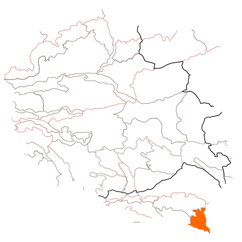

Bieszczady to pasmo górskie leżące w Beskidach Wschodnich należących do Karpat Wschodnich. Jego teren jest ograniczony dwiema przełęczami – Łupkowską i Wyszkowską. Bieszczady znajdują się nie tylko na terenie Polski, ale również Słowacji i Ukrainy, przy czym ich wschodnia część leży wyłącznie na ziemiach ukraińskich.
Najwyższy polski szczyt Bieszczad do Tarnica, która mierzy sobie 1346m n.p.m. Jest, więc idealnym miejscem dla osób dopiero rozpoczynających przygodę z górami. Szlak czerwony, niebieski i żółty sprawiają, że każdy wybierze taką trasę, która będzie dla niego możliwa do pokonania. Podczas przemierzania kolejnych szlaków, warto zwracać uwagę na pomniki przyrody, które znajdują się tu w wielu miejscach.
W trakcie wędrówki otoczymy się malowniczymi krajobrazami roztaczającymi się w całych Bieszczadach. Wnikliwi obserwatorzy zauważą rzadkie gatunki roślin i zwierząt. Na trzech piętrach flory znajdziemy m.in. jodły, olchy oraz buki, w tym te karłowate, a także różnorodne trawy. Wśród fauny spotkamy naprawdę rzadkie okazy – mieszka tu ok. 70% polskich niedźwiedzi. Poza nimi, na tym terenie żyją wilki, żbiki, żubry, rysie. Nie brakuje też wyjątkowych ptaków, w tym puchaczy, orłów przednich czy puchaczy halnych.
Wybierając się w te tereny warto zaopatrzyć się w przewodniki, dzięki którym będziemy wiedzieli, które miejsca należy koniecznie odwiedzić. Są one dostępne nie tylko przy wstępie do jednego z najpopularniejszych parków – Bieszczadzkiego Parku Narodowego, ale również do pozostałych, mieszczących się w Bieszczadach parków krajobrazowych, rezerwatów przyrody oraz Międzynarodowego Rezerwatu Biosfery. Pozwolą nam one zaznajomić się z najważniejszymi walorami gór.
źródło: http://www.szukamfirme.pl/regiony/3/bieszczady 